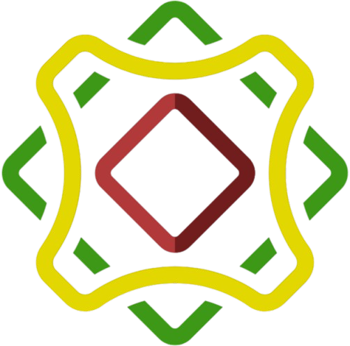

Cruv AI is a private, high-performance intelligence interface that transforms your institutional documents into a searchable local brain. It is a hardened, air-gapped RAG (Retrieval-Augmented Generation) system deployed exclusively on your internal hardware to ensure 100% data sovereignty.
Talk to Aces4Using public AI for Philippine government filings or private company data is a security breach waiting to happen. Cruv AI creates an air-gapped sanctuary where zero bytes leave your building.
Public clouds train on your records. Manual search slows your growth. We solve both through local private server orchestration.
Cruv AI is a hardened software designed to deploy for institutional memory. It reads your PDFs, Excels, and images locally—citing sources directly from your vault.
Data Privacy Act (DPA) ready. Your PII and sensitive government records remain under your physical control at all times.
Cruv AI doesn't just "talk"—it indexes. Every PDF, spreadsheet, and scanned image is shredded into high-dimensional vectors, allowing the AI to "know" your data with mathematical precision.
No more digging through folders. Just ask, and the AI retrieves the exact paragraph from a 500-page document in milliseconds.
We analyze your existing document silos and security requirements.
Setup of the hardened Ubuntu environment on your physical or private cloud servers.
Cruv AI ingests your data, creating a private neural map of your institution.
Your team begins querying the local brain with 100% data privacy.
No. Cruv AI is designed for air-gapped or restricted network environments. There are no external "phone-home" calls to any AI provider.
We implement role-based access control (RBAC). Admin roles require specific approval levels, ensuring that sensitive government information is only accessible by authorized personnel.